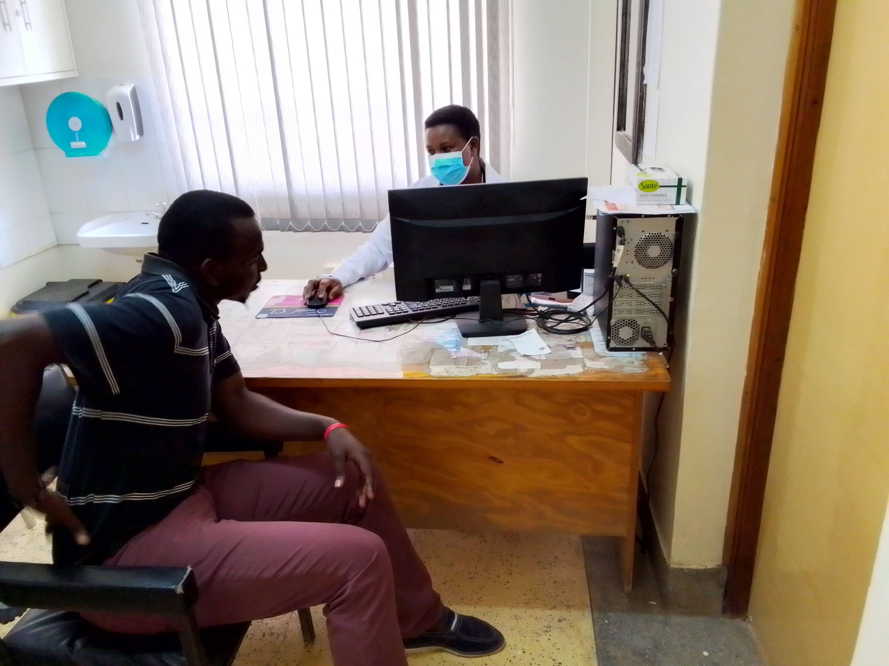

1. Exceptional healthcare services: Our experienced team provides compassionate care tailored to your needs.
2. State-of-the-art facilities: Equipped with modern tools for accurate diagnoses and effective treatment.
3. Comprehensive medical care: From routine check-ups to specialized treatments, we cover various medical needs.
4. Affordable healthcare: We offer competitive pricing and accept diverse insurance plans for accessibility.
5. Patient satisfaction focus: Your comfort and well-being are our utmost priority throughout your visit.
6. Convenient location: Centrally situated in Kitengela for easy access from all areas.
7. Community engagement: Actively involved in promoting wellness and improving community health.

Consultation Room
In our consultation room, trust and understanding form the foundation of healing. We convey the essence of our practice as a safe haven, where patients find solace and doctors deliver compassionate care.

Laboratory
In our laboratory, trust and precision are the bedrock of scientific advancement. We epitomize a secure environment where researchers explore, innovate, and collaborate with unwavering dedication.

Maternity
In our maternity ward, trust and empathy are the pillars of care. We embody a nurturing environment where expectant mothers find comfort and support, while healthcare professionals deliver compassionate and expert guidance throughout the journey to parenthood.
More Services